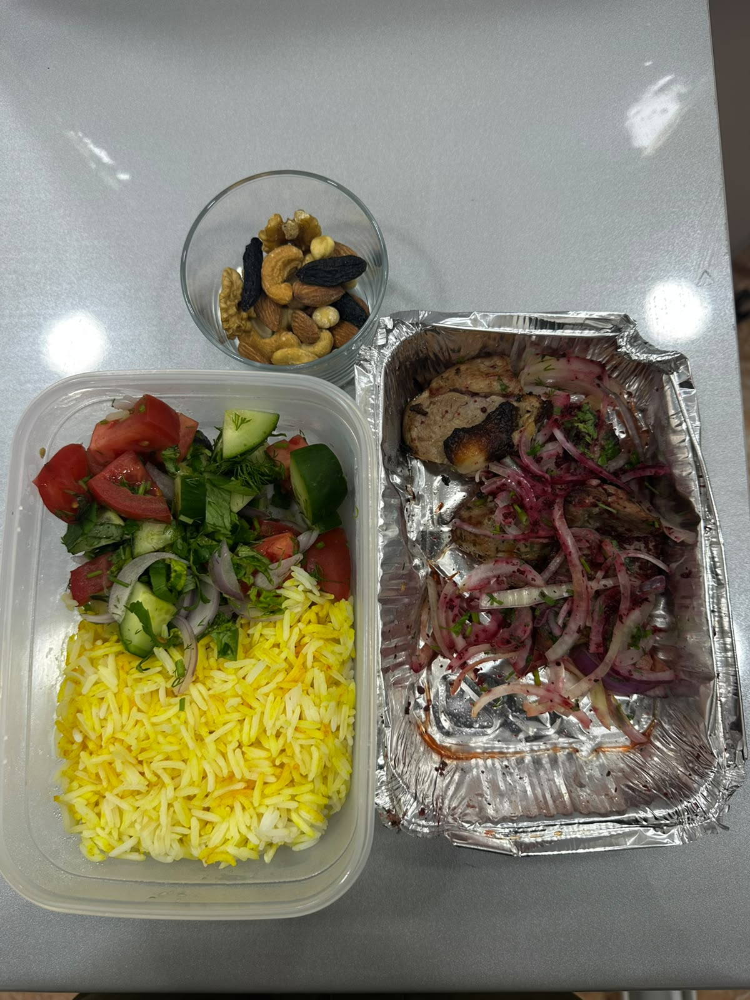

Reported by the team
School activities
The team introduced its lunchboxes through school activities.
Documented here: the three boxes themselves. Still to publish: which activities, when, and how many students took part.
What has happened so far
What NUTRIX LAB has done so far, with the evidence for each part on this site — and what we deliberately do not count until it has been measured properly.
The rule for this page
Every number here counts something you can check on this site. No estimates, no rounded-up totals, and no figures about people until they have been recorded with a date and a method.
These count what is documented on this site, not people reached.
Each part of the initiative, what it has produced, and how sure we can be about it. Documented means you can see the evidence here; reported means the team says it happened and the details are still to be published.
The team introduced its lunchboxes through school activities.
Documented here: the three boxes themselves. Still to publish: which activities, when, and how many students took part.

Students run the project: they developed the lunchboxes and do the bench work themselves.
Evidence: Inside Our Lab. The team: Jeyla Ahmadzada, Youssef El Haroun, Mikayil Ahmadbayli, Farah Haji and Jamal Naghizade.

Three complete boxes, each with a starchy food, a protein food and fruit or vegetables, packed to last a school morning.
Evidence: School LunchBox Program. Amounts and costs are not yet recorded.

Hands-on work turns food into something to investigate: what is in it, what changes when it is cooked, and what happens when two foods meet.
Open to anyone: the Food Library and the box-to-bench questions.
25 family recipes — Azerbaijani, Caspian and Mediterranean — recorded through conversations with parents and grandparents: ingredients, preparation and the story behind each dish. Seven reference records connect traditional dishes to our boxes.
Recorded: 25. Being added to the Food Archive; they will count in the tally above once they can be read there.
One pairing page is open and three more are in preparation. No laboratory result is published yet.
What someone outside the team has said about the project, in their own words, with their name, role and the date they signed.
I highly value the project's effort to bring nutrition research together with traditional family cooking.
A particularly valuable contribution was their documentation of 25 family recipes.
In my view, the project's greatest strength is the connection it builds between generations, culinary heritage, and scientific learning.
I would also like to highlight how clearly the team defined the limits of its own research: […] no invasive testing was carried out, and no health-effect claims are made.
NUTRIX LAB demonstrates initiative, originality, and a thoughtful approach to the needs of the community.
Excerpts, quoted word for word. Read the full signed letter (PDF, 6.8 MB).
These are the numbers that would show whether the lunchboxes work for the people eating them. None is published, because none has been measured in a way we could stand behind.
Scroll the table sideways to see every column.
| Figure | What it needs first | Value |
|---|---|---|
| Students reached | A dated record of each activity and who attended | — |
| Schools involved | Each school's agreement to be named | — |
| Cost per box | Prices from named shops on a recorded date | — |
| What comes home uneaten | The planned school pilot, with consent and ethical oversight | — |
| Whether students liked the boxes | The same pilot, with a stated method | — |
It carries a date, a source and the method used to count it. Figures about students need consent first; figures about schools need the school's agreement to be named.
Until then the cell holds an em-dash. An empty cell is more honest than a hopeful one.